(日記とか言うモノ)
雪のせいでスカパー絶不調。ジェニーがああああああ。
朝の録画を見たら、最初のちょこっとしかまともに映ってなかったよぉおおん。
日本語になって内容がよくわかるようになったせいもあるけど、思ってたよりジェニーってドジっ娘で、おてんばさんなのね。口調のせいもあるけど。
日本語版のジェニーのしゃべり方や声ってなんかエスパー魔美に似てるなあ・・と思いましたが、そう思うのは私だけなのかもしれません。
録画失敗でそれほどダメージがないのは、ジェニーはまったりと楽しみたいと思うからなのかな？のんびりとレギュラー放送で楽しみたいと思ってます。
さすがに大晦日くらいはのんびりと。（なので正月絵もかかないとおもわれ）
最後の最後に今年をちょっと振り返ってみる。
・・・・いっぱいありすぎて書ききれません。そう思うと、充実した一年だったのかな？
あえて一つあげるとしたら、パワパフ新作夏来スペシャルかなあ。
特にその放送前日。本編そのものより、ついに見れる！という気持ちがマックスに達した、あの興奮はわすれられません。
良いお年を。
冬コミ二日目。今回はいろんな人とお会いするスケジュール調整が難しかったのですが、楽しかったです。
とりあえず力つきたので、また今度。
でも、大晦日は大晦日で私的に忙しいのでつもる話は来年にもちこしかも。まあ、まったりと～
ジェニーを見て出社したので、心はホクホク。でも外気温は寒寒。
コミケ一日目いってきました。仕事終わってから行ったのでなんだかんだで3時ごろ着。もうすでにコミケは終わりかけモード。まあ今回はほとんど回るとこないんでちょうどいい感じでしたが。
「はぐれパラノイド」の新井さんとこでパワパフ本ゲットして、その流れで「御ゐ輔丼」「むしパンダ」さんとこへおじゃま。すぐ近くなんで移動時間ほとんどかからず。新井さんはユートニム博士コス（まあ白衣着てるだけなんだが）。御ゐ輔丼さんはバターカップ冬服コス（上から下まで緑のひと）。
「むしパンダ」さんのところになぜか『パワーパフガールズ ジャン！ジャン！』が！！！
じつはむつりんごさんも執筆していたのでした。おおー。明日入手できるかどうか難しそうな気がしてたのでラッキー！やっぱりこの本、今回の大穴！ムキーって感じでおもしろいです。
今日はもうほかに回るとこもないので、むつりんごさんブースの中にずうずうしくも入り込み、ゆっくりおしゃべり。エヴァラの若鶏さんもおりました。ティーンタイタンズ話とかもできて楽しかったですわん。
若鶏さーん、レジェンズはティーンタイタンズをベースイメージとして大地監督が作った作品なんで、ぜひTTも見ましょう（でも全然違うけど）＞大地監督日記1月19日参照
ついでにいえば、ティーンタイタンズもレジェンズも動画下請けは同じ「同友動画」だったりします。＞大地監督日記5月8日参照
そーいえば、新井さんに、むつりんごさんに、そして御ゐ輔丼さんに会うたびに聞かされた話がありました。
「「娘のために、買いにきたのですが・・・」というパワパフ本めあてのコミケに慣れない感じのおかあさんが来たんですが、その手にはスカポン太さんとこのコミケメモをプリントアウトしたものが！」ちょっと笑った。
あ、いえいえ、お役に立ててなによりでございます。どなたかわかりませんが娘さんによろしく。
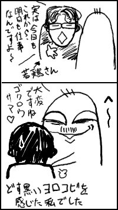
仕事終わってウキウキな私
◇
その後池袋へむかう。
FScさんがまた来日しているので、お茶会に誘われているのでした。わはっ。
夏のときはComic
Archivesのとおるさんとぬけがけみたいなお茶会でしたが、今回はもけきよさんやあやさんらもご一緒でした～。テクリさんもカナダから帰省したその足でかけつけたようなのですが、私は次の用事もあったので入れ違いになってしましました～。残念。まあ、でも明日のコミケで会いますけど。
あいかわらず気さくな性格のFScさんなので、コミックの話以外に普通に世間話とかで盛り上がってしまいましたとさ。ペットの話とか。（FScさんは3匹の猫さんを飼ってるそーですよ）
そこでだ！
またFScさんにプレゼントをいただいたわけなんですが。もう大感動。私がパワパフ好きだってことを覚えていてくれたのですよ！パワパフシールやメモ帳、絵はがきなんかもいただきました。
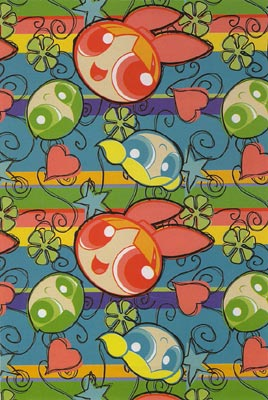
↑絵はがき。うわっかわいい。でもこんな図案はじめて見たなあ。雰囲気とかもあまり見たことないしタイプだし。と、思ったら・・・・
我が人生に一片のくいなし！
あ、ありえね～～！こんな糞虫のようなわたくしめのためだけに、FScさんがパワパフ絵を描いてなんて～～！！ぴぎゃ～～す。だいたいFScのパワパフ絵なんて超レアすぎ。しかも俺のために！FScさん、特にパワパフなんて見てることないというのに。（すいませんかなり自慢はいってます）
◇
そして新宿へ。
いつものカートゥーン仲間さんたちとお会いするためなんですが、今回はサンタクルズから日本に帰省してきているという、いつも海外情報とかでお世話になってるmassangeanaさんとお会いしたのでありましたっ！！
・・・さすがにここで力つきました。今日もりだくさんすぎ。明日気力があったらこのへんも書きたいです。掲示板もレスももうちょっとおまちください～。<(_ _)>（あとメールの返事も）
ジェニー始まった！オープニングは英語のまま！
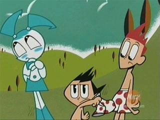
吹き替えはけっこうやんちゃな感じ。
タイトル言うとき「～の巻」とか言うのはどーなのかね。
あ～でも、原語のカワエさんの声かわいいよかわいいよ。
さあ、今日はちゃっちゃっと終わらせておでかけしよう。
忘年会でヘロヘロ。
帰ってきてきたら仕事の件でメールがきてた。
「明日までのやつ来年でいいよ」
こ、このくそ野郎もっと早くいいやがれ～～。俺様の失った睡眠時間をどうしてくれようか！！
て、いいうかまた貴様か！おまえ去年もこの時期にそう言ったろ！！！
去年の日記漫画＞■
同じ担当・・・もともと来年でいい話だったのに、お前がたんに「今年中にスッキリしたいな～」ってだけなんだろ。あほ～。
まあでも、去年は29日の午後になって言ったことが前日にわかったのがなにより。どのみち出社するけどかなり余裕ができました。寝れるし。
でも今年の29日ってプライベートの予定もバッティングしまくりなんだよね・・・とりあえず3カ所かけもち。明日会う方で、あれ？29日ってうちらとの予定だけじゃなかったの？と怒れらそうで怖いな。
TeenTitansGo!買った。今回はスピーティー登場で、敵はプラズムス。ペンシラーのTodd Nauckさん、どんどん自分絵が進んできて、スターファイヤーの頭身がえらいことに。今回レイブンがずっとフードかぶりっぱなしだったのは残念。
Spece Ghost#2も購入。
なんだかおもしろくなってきましたよ。前回で撃ち殺されたかと思われた主人公はなんとか命をとりとめていた。しかし、誰も住まない「死の惑星」に放置されていた。ところが、実は住民がいて、彼（サロモン）に助けられる主人公。一度は絶望のあまり死を選ぼうとした主人公だが、まあいろいろあってサロモンとの友情も芽生え共同生活。
そんななか、サロモンにこの星はもともと高度の文明を築いていたが戦争によって滅んだと聞かされる。そして・・・その超文明の遺産の宇宙船と、アームバンド、ベルト、ブーツを譲り受けるのであった！！！
宇宙怪人ゴーストの誕生だ！！
んーとあれですね、ゴーストのピチピチ白タイツ服は、もともと彼が所属していたとこの制服みたいなものなんで、ノーマルなんですが、この装備こそがスペースゴーストをスペースゴーストたらしめる超装備なのですな。
パワーバンドはおなじみのなんでもアリ光線をだすやつで、ベルトは透明になるやつ。ブーツはなんだろう？とおもったけど、多分これで空が飛べるようになるんじゃないかと。
この装備は正義のために・・と誓うが、その威力に自分の妻を殺し、ここまでおいこんだ敵にたいしてメラメラと復讐心が。完全装備装着して惑星から出てゆくところで終わります。もりあがるなあ。

ゴゴゴゴゴゴゴゴゴゴゴゴゴゴゴゴ（日本だったらこういう擬音がはいるとこ）
カッコええ！ていうか怖いよ！まるで西洋中世の死刑執行人のようだ。
ここんとこの最後のセリフがかっこえんですよ。
ふたたび死地へおもむくゴーストに対してサロモンが言う。
「なにをする気だ！君を死なせるためにそれを渡したのではないぞ。罪深きものよ（godless animal）！」
「前に言ったはずだ、サロモンよ・・・
私はすでに死んでいる （I am dead）」
どーーーーーーーーーーーーーん！
ゴーストとなる主人公の名前は「Thaddeus Bach」でいいようです。今回のほうが英語わかりやすかったなあ。
明日はジェニーだ、忘れるな自分。
今回も小町屋さんに誘われて同人誌用に描いたものの一部。

ていうか、さっき送った。間に合うのかしらん？めっちゃかきなぐり・・・本にするレベルじゃないわ。（いつもの日記漫画レベル・・・・）
睡眠時間削って描いたので許してください。 orz...
忘年会のお誘いをあれこれ断ってきたきたけど、今日ははずせない忘年会。はたして行けるのでしょうか。（まあ、いままでのも断るというより自動的にいけなくなったと言うべきか）
つか、酒入ったら寝そうです。いや、今寝かせて。
海外のファンサイトとかみると、ビースト×レイブンのカップリングをけっこう見かけるんだけど、なんかそれっぽいエピソードとかあったのだろうか？自分は（スターには悪いが）ロビン×レイブンがいいかも・・・なんかちょっぴり大人っぽい関係な気分。あ、むしろロビン×スターで、ロビンとレイブンが不倫のほうがそそるかも。 ちなみにジンクスの場合、ジンクス×俺。
などと中学生みたいな思考をするくらいちょっとせっぱ詰まってきました。明日間に合うかなあ・・・
しばらく見ないうちにbleedmanさんのファンコミックがとんでもないことに！
パワパフコミックが大バトルのチャプター5になったのはいいとして、あいだを挟んで
「Grim
Tales」なんてのが始まっちゃってるよ！！
ビリマン系ゴスファンコミック！！なの？ すごく気になる～。だって、これのキャラ設定とかみると、レノーアまでいるんですよ、あなた！ナーゴルジュニアも登場？？すげえ。
とりあえず、主人公はオリキャラのグリムJr.とミニマンディみたいです。ミニマンディいい！
いままでの原稿をまとめて、コミケで代行販売とかだれかしてくれないかしらん。
コミケかあ・・・そろそろチェックリストとか作りたいなあ。
あちこちの局でクリスマスものとか流れてますが、もっとクリスマス・カートゥーンを見たい！というあなた。
18歳のステキなBoy3人組が一年中裸でくんずほぐれつ、キュートなお尻をすりあわせて喜ぶというステキなヒーローカートゥーンをご紹介。
「Super Duper Sumos」
こちらのサイトでバッチリ視聴できますです。現在クリスマスエピソードも放送中。
キメポーズがアホキモいというか、マッチョ変身（筋肉ムキムキになる）とか意味あるのかよくわからない。そもそも制作はこれを本気でカッコいいと思って作ってるのか、ギャグのつもりなのか微妙に不思議な、正義のヤングスーパー相撲取りでございます。
夜の街のビルの上を「ぼよ～ん、ぼよ～ん」（ホントにこういう音）と飛び回る相撲取りというシュールな絵は夢に出そうです。スモーって言っても相撲の技なんかつかいやしません。ほとんど体当たり。でもティーンタイタンズより強そうに見えるのはなぜだ？？？（笑）
はたしてコレが日本で放送する日がくるのか・・・DICだし、マドレーヌつながりでやったら笑う。
◇
スポンジボブ映画2006年に日本公開なんだと！！大丈夫なのか！ラグラッツとかあんな状況だったというのに・・いや、個人的には嬉しいんだけどね。2006年なんてずいぶん先だと思うけど、それまでに日本で知名度をあげておこうってことなのかも。
しかし、試写会英語版かつ字幕なしでしょ。どう考えても親子というよりマニア向けという気がするんだけどなあ。帰国子女の親子とかでないときついんでないかい？
ToonZoneのフォーラムで日本でカートゥーンのファンアート見れるとこ～～。ってな話題があがってました。
American
animation fan art from Japan
わー、よく知ってるとこがいっぱい。自分とこもあるよ。
ソニックはアメリカアニメって認識なのかな？（実際そうともいえる。アメコミもいっぱい出てるし）
ねこみそさん情報によるとハーレィ＆アイビーが2月に出るそうな。ジャイブ公式だと冬とか言ってんのに、予定ぎゅんぎゅん早まってるみたいでなにより。
さて、後はなんとか仕事をかたずけて、ジェニーはティーン☆ロボットをまったりと見たいものである。
てなわけで、スカパーのガイド誌を見ると・・うぎゃーーーん、ジェニーの番組記事があるよーん。どうやら＃4「Ear No Evil」の邦題は「あこがれのイヤリング」みたいです。え、耳なんかあったっけ？あげくの果てに鼻ピアス・・・早く見てえ。Sheldonは日本公式では「シェルドン」となるようだ。
ジェニーの声優も気になるけど、原語のカワエさんの声に萌え萌え状態。がしがしのAMIもかわいいよかわいいよ（声が）。
しかし、今回のガイド誌でのカートゥーンネットワークのページ・・・違うチャンネルかと思った。日本アニメだらけの紹介記事・・アニマックスですか？？土日に日本アニメが集中してるのは、土日のティーンエイジロボットを見ろという、ありがたい構成なんですね。ありがとうCN。
あちこちのサイトでクリスマス仕様にかわる様子が楽しくてたまりません。クリスマス絵もいっぱい。
毎年私もクリスマス絵を～と思っているものの、クリスマスが一番忙しい時期というイヤな状況であります。クリスマスだからといって早く帰りやがって、そのしわ寄せはみんなこっちですかバカヤロウ。
メラメラクリスマスだかなんだかで、クリスマスカートゥーンもいろいろやってるわけなんですが、肝心なものが放送しないのはどーいうことですか、カートゥーンネットワーク様。クリスマスエピソードといったらコレでしょ、やっぱ。
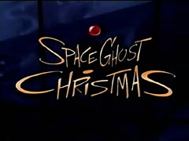
スペースゴースト・クリスマス！！

歌う歌う

とにかく総出演で歌いまくり。ていうか歌しか歌ってない。
全編これ歌いまくりのエピソードなので、歌ごとにバラバラに分割していいから、クリスマス特番の隙間にまぎれさせてくださいよ。訳す必要もナッシングです。ぜひクリスマス用「カートゥーン歌いまショー」で！
◇
絶対ムリな望みを言っても悲しいだけなので、今日もいつもどおりタイタンズ感想とか書きます。
TT「対決 後編 （Aftershock Part Two）」
テラしゃん・・・
ティーンタイタンズがやらねば誰がやる・・・って感じでアンドロ軍団のようなロボットの行進。
こうして見ると、スレイドの手下ってみんなロボなのね。弟子とか言ってるけど、この人って人を支配下において屈服させることこそが喜びであり目的のような気がするね。テラもいずれは意志を奪ってロボットのようにするつもりなんだろう。となると、あのロボット部下たちももとは人間だったんじゃなかろうか、とか思ってしまいます。
テラ話の場合テラそのものより、テラに反応するまわりのキャラのほうに目がいくことが多い。今回はスレイドのサドっぷりがよかったな。
最後の笑顔でちょっと救われる話だったけど、ちょっと構成が弱かったかなあ。アクションや演出中心のティーンタイタンズではあれだけやっちまった流れを、うまく収束させるのは難しかったのかも。30分に納めるには容量オーバーかもしれないけど、もう少し詰め込んで深く掘り下げてほしかった。
このままだと、テラちゃん、あれもイヤ、これもイヤの情緒不安定キャラということにもなりかねん。
アニメ版ティーンタイタンズはオリジナルの要素は強いとはいえ、どうも原作コミックの話をベースにしていることが多いようで、テラの話も原作があるみたいだ。だから、そっちを読めばもっといろんないきさつとかわかるかもしれないし、それがあるからアニメではくどく解説するようなことはしないようにしたのかもしれない。
でも、私は原作を読んでいないので勝手にテラちゃんのこととか考えてみる。
とにかく逃げてばかりいる子なんですが、それは多分過去にまあいろんなことがあった、ということなんでしょうね。それで、いつも彼女の中での「解決策」というのは「逃げる」ということしか無くなったんだろう。
ティーンタイタンズを裏切ってスレイドについたのは、きっと信頼というものが怖かったんだと思う。神田川でいうところの「ただ、あなたのやさしさが怖かった～♪」なんですよきっと。
仲良し和気あいあいの居心地の良さが、逆に「居心地悪い」ってことあるじゃないですか。それが肥大化したようなもので、仲の良い環境が逆に不安で、むしろ敵対するほうが落ち着くし自然だったんだよ。みんなからの好意もうれしいけど、慣れないからとまどってしまい、逃げる。
レイブンとは精神的に似たもの同士だっだけに、同属嫌悪に近いものがあったのかも。他のキャラよりキツイ言葉で攻めてたのも、あれはそっくりそのまま返されると自分にとっても一番トゲのある言葉だったからだと思う。
あーやっぱり前後編でテラvsレイブンのシーンは傑作だよな。一番印象に残ってるよ。試しに英語で聞いてみたら、「英語」という言語の特性なのか、もっとストレートでキツい言葉だったように思えた。
ちょっと話がそれたが、そんなテラだからこそ、スレイドに惹かれたんだと思う。なんの目的もなく逃げるだけで生きてきたものにとって、一方的に命令してくれて目的や行動を指示してくれる存在ってのは、善悪とかじゃなく「楽」なんだろう。あと、もしかしたらテラはファザコンなのかも。
ん～～、なんかコレって、新興宗教にハマるパターンと似てるかも。
自己解決できないで不安定でいる人間にむかって「私ならわかってやれる」「いうとおりに従えば間違いない」とか、そうやってつけいる手段がさ。うーん、これも友達をなくすパターンだ。
スレイドのもとへ行ったのも自分の意志とはいいながら、けっきょくは逃げにすぎなかったが、最後の最後で「自立した意志」を獲得したのは、やっぱりこれはこれでハッピーエンドってことなのかな。
あと、ファザコンといえば、スレイドをパパと見立てると、「そんな友達とつき合うんじゃないっ！お前はパパの言うことだけ聞いていればいいんだ」バシーッ。という専制的な父親をもってる娘さんとかは、けっこうテラに自分を重ねてたりするんだろうか。娘のデートを監視するパパみたいな。お父さんは心配性！！
さて、なんか無駄に深読みしてみたけど、たまにはいいか。
ところで、第一シーズン、第二シーズンのラストの原題がともに「A」で始まるのは狙ってたことなんだろうか？
それはともかく、はやく第三シーズン来ないかなあ・・・ジンクス再登場！見てえよう。
どこぞの日記で見かけた言葉。
「まあ「ブログ始める！」と言ったまま、ストップしている人とかいるわけだが。」
あう～～～。_|￣|● 今年一番のヘコむ言葉でした。
とうとう今日で最終回。あーおもしろかったなあ。
5人の個性もけっこうしっかりしてたし、予想に反してなかなか見応えのあるシリーズでした。
最初は赤毛のねーちゃんはどうでもよかったんだけど、見続けてるとなかなかオモロイキャラでいいかんじ。でもやっぱり私は黒髪のクールねねーちゃんのほうが好きだなあ。
予定みると、これで放送も終わりっぽくて凄く残念。全40話中10話くらいしか見てないのが悔やまれる。年明けにレギュラー放送してほしいんだけども・・・
あ、「ゴジラ・ザ・シリーズ」の話です。
これ、ほんと面白いのよ！！
ゴジラってシリーズもの出来るのか？と疑問に思ってたけど、どの話もなかなかに見応えがあって良い。日本の場合「怪獣」ってなるとどっか「自然災害」に近い感覚だけど、アメリカだからなのか「ミュータント」として扱っていて、そのおかげで話も膨らんでます。
毎回出てくる怪物ミュータントたち、倒したあとどうしてるのかな～っと思えば、軍がモンスター島というのを作ってそこで保護研究してたりね。で、「ミュータント達を守れ」といった狂信的な怪獣大好き過激保護団体が出てきたり、ニュースキャスターの目を通して一連の怪獣騒ぎを多角的に捉えたりと、あれでもかこれでもかと手法を駆使して怪獣SFものを作ってしまってるとこに脱帽。
よくわかんないけど、最初はもっとダメダメっぽいものを想像していただけに、やたらまともだったからその反動があるのかなあ。
さすがに最終話は別に最終話っぽくなかったですけどね。カートゥーンでもよくある「とりあえず、ここでエピソードの制作はおしまい」という感じ。 悪いヤツラが、ゴジラら怪獣を集めてお金持ち相手に「怪獣プロレス」を開催して稼ごうってお話だもの（笑）
てなわけで、まだ今日が最終でないティーンタイタンズ。
TT「対決 前編 （Aftershock Part One）」
昨日のバカエピソードからうってかわって重くて痛い話。落差でかいよ。
テラの邪悪顔全開で見事なまでの悪役っぷり。アクションよりなによりその言葉が最高にトゲトゲしい。これはけっこう効くね。
ビーストボーイより、今回はレイブンが痛々しくて見てられなかったよ。
でも、テラとレイブンの超能力バトルはお互いハデなだけに見応えはあった。 それにレイブンの日本語吹替の声良いね。原語のタラさんもよいけど、これは日本語版のほうが好きかも。感情に近い部分のセリフだとやっぱり母国語のほうが届きやすいのもあるのかもしれない。英語がもっとわかれば別かもしれませんが・・・
海外ではテラ嫌いな人けっこういたけど、なるほどとちょっと納得したエピソードでした。
でも、「好き」の反対は「嫌い」じゃなくて「無関心」。強く嫌いだと思えるのもそれだけ感情移入できてる証拠なんだろう。明日の後編でどんな印象になるのか楽しみです。（大ハッピーエンドにはならんだろうけど、少しは救われる話だといいな～）
同じ裏切りでもレコアさんの時は「なんじゃこのアホ女は」と思ったのとえらい違いだ。まあ、あっちはもっと大人の生臭さがあったからなあ（笑）
そーいやテラがレイブンを罵倒するときに
「このマゾが！」とか言ってるように聞こえたんですが「魔女」ですよね、ね、ね。
とまあ、テラとレイブンばかり印象に残ってたけど、やっぱりスターのアクションは今回も好きだな。空から降りてくるポーズとか、蹴りとか、岩とか。
おまけ：今日の塗り忘れ
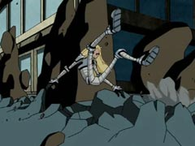
テラちゃん白ぱんちゅ！！！
熱だして早退したのでティーンタイタンズも「「ザ・ファイト・ビフォア・クリスマス」も余裕で見れました。わーーーーい、ゲホゲホ・・・（さすがにディズニーでやってるナイトメア・ビフォア・クリスマスは今回パス・・・）
「ゆっくり休んで、養生しなさい。でも締切は明日だからよろしく」
と言うとても暖かい言葉をうけて、泣きながら自宅仕事。これって意味あるのか？まあ、いつでも横になれる環境といえばそうだが・・・ちょっとデジャブ（どころではないな）
パワパフクリスマス！偉そうに説教たれるブロッサムや、夜中きょろきょろバブルスが、やっぱりええですな。博士 う か れ す ぎ。
今日のティーンタイタンズ。
TT「もう１人のロビン（Fractured）」
日本語吹き替え版で一番気になっていた回。Rocky Toy-C（多分Puffyのマネージャー登石俊和）の熱唱がそのまま流れた。まあ、さすがにこの回はこのオープニングははずせない。もちろん副音声の英語放送でも日本語歌だった。
昨日の鬱展開とうってかわってバカエピソード。落差激しすぎ。
ジョニーとのバイクチェイスシーンは、新ミュータントニンジャタートルズでのケイシーとラファエロのバイクチェイスを思いだした。そーいや、あっちでもカメのくせにちゃんと交通ルールを守ってラフもヘルメットをかぶっていたっけ。もしかしてヒーローはノーヘル禁止の放送規制とかあるのかも。
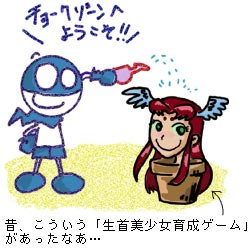
「チョークゾーンかよっ！！」と、おもわず、のけぞる。スナップがこっそりまぎれてねーかなあとおもいつつ、あのドタバタパートが最高に楽しかったです。レイブンは「フランケンシュタインの花嫁」になるし（怪奇つながり？）、スターファイヤーは首ちょんぱ（笑）激萌え。
で、問題はラリーですよ。
これが以前Boxmanさんが掲示板で言っていた「TTのロビン＝ディック」話だったのですな！！
ラリーが最初に名乗った名前「NOSYARGKCID」。これはよくあるアナグラムで、スペルを逆さにすると「DICKGRAYSON」すなわち「Dick Grayson」！！ディック・グレイソン！
ラリーとロビンはDNAも同じ別次元の同一存在ということで、ティーンタイタンズのロビンはディック・グレイソンということとなる。ナイトウィングになるのも正統な歴史観だったというわけか・・・ラリー登場の時ちらっと出てきた古いアメコミバージョンのロビンもそれを裏付ける。ティムじゃないんだ。ほほう。
こういう逆さ綴りのアナグラムではよくあるのが、「Dracula（ドラキュラ）」＝「Alucard（アルカード）」
そういえば序盤は「FLCL」ぽいような気がした。おでこからびにょーっておできが出来て、そこからラリーが登場するとことか、漫画のコマが出てくるとことか。放送前のインタビューで「FLCL」に影響されてとかグレン・ムラカミが言っていたものあったと思うが、この演出はそれを意識してのものなのかなあ。後半は「ハレブタ」？
うーん、パロディが多いのはカートゥーンではよくあることだけど、ティーンタイタンズは今までのカートゥーンのパロディとはちょっと違う感じがしてた。でもこれに近い感じはどっかで観たような・・・「不思議の海のナディア」？あのザッピング感に近い気がするのだがどうだろう。
さてと・・・ドーピングの準備っと。（体はアレでも気分はなぜかハイ）
最近はあちこちでいろんな人のティーンタイタンズ絵が見れて楽しいです。
ねこみそさんとこのお絵かき掲示板も最近はTT絵が活発。
ウテナにタキシード仮面？赤ずきんチャチャまで！と絵柄のバリエーションが豊富で良いなあ。アメコミだと同じタイトルなのに作家が全然違うのがあたりまえだけど、作家性の強い日本の漫画はそういうことはほとんどない。と、思ったら最近ブラックジャックをいろんな作家が描いていて、おもしろいです。
今日も見れたよティーンタイタンズ。
TT「裏切り（Betrayal）」
衝撃の事実発覚！
タイタンズタワーにセキュリティシステムってあったんだ！＜そっちかよ！！！！
だって、パペットキングなんかあっさり侵入してたし、ジンクスたちなんか正面から堂々と侵入して占拠しちゃったし・・・
あと、スターファイヤー、スターボルトとか飛ばさないでも素手でパンチで十分強いのではないかとも。
さて、今回のお話はタイトルからしてネタバレだし、オープニングからモロバレな展開。とはいえ、それがわかっていても、いやわかってるからこそ実際観るとつらい・・・特に楽しげなビーストボーイが痛々しくて見てられなかった。
キム・ポッシブルのクリスマス話をみて、ほんわかしていた気分ぶちこわし。
デートのシーンは「あずまんが大王」っぽいデフォルメが多かったが、引用というより、もうすっかり自分たちのものにしちゃった感じ。ホラーコースターのカメオはグレン・ムラカミだろうか？
今回はテラにも告白の練習シーンを見られたり、キス寸前のところまでスレイドに見られたりと、いろんな意味でビーストボーイにはイタイ話。なんか、貧乏学生がお金持ちのおじさまに彼女をとられちゃったように見えてしまい、これまたイタイ。「いまにみちょれ！」男おいどんBBがんばれ。
やっぱりティーンタイタンズはキャラに入れ込んで感情移入してみる番組だよなあ。感情移入できない人には、筋は荒いし、単純だし、演出のデフォルメが逆にウザくてしょうがないものに見えるんじゃないかと思う。
それにしても、やっぱり昨日「帰ってきたテラ」を見ておいてよかった。
箱男さんの12月6日の日記にあるように、最近は一話完結形式をとりながらもシリーズで連続構成になっていることが多い。やはり昨日比較したようにKNDでもそうだ。これも「日本アニメの影響」というには単純すぎで、この形というのはむしろ洋ドラの構成に近い。X-ファイルなんかその典型。あれもシーズンごとにシーズンエピソードと単発エピソードが混在していた。前回で核心にせまる緊迫した話だったのに、次回になるといきなりまるで関係ないバカエピソードとか混じっていたりしたものだ。
というわけで、最近のカートゥーンというものは「日本アニメの影響」だけで変わってきたのではなくて、「ショー」だったものが「ドラマ」に変わってきたという現象なんではないだろうか。背景美術に力を入れ始め、作品ごとに世界観を反映した独自のものが多くなってきたのもそのためだろうか。
ティーンエイジロボットなど、キャラなどはパワパフやデクスターっぽい感じがあるが、背景美術は入れ替えがきかない。最近のこのあたりのトータルデザインは日本以上とも思える。（日本でも野心的な作品は同じようなことしてるから、どっちが上とか言い切れないんだけどね、ほんとは）
◇
ティーンタイタンズを見逃さないようにと、早めにチャンネルをつけるようにしているので、自動的に「フリントストーン」も見ることが多くなっている。意外におもしろいね、これ。
ジェットソンより黒くてエロい。女性がけっこうキュートなんだよなあ。エンディングの店のねーちゃんが仕草とかけっこういい感じ。
さて、明日はいよいよ、メラメラクリスマス「PpG：ザ・ファイト・ビフォア・クリスマス」。録画もあるし、海外版ビデオも持ってるけど、観たい。いや、だからこそリアルタイムで観ないと意味がない。PpG新作がなかなかこなかったころのものだったので、ちょっと思い入れがある。
「わゆいこ！」プリンセスがけっこうかわいいのよ。あと夜中にのぞき見のバブルスとか。
パメラ・アンダーソンのオバカヒーローカートゥーン「ストリッパレラ（Stripperella）」がDVDになるってよ！うわー、こんなものまでなるというのに、なんでカートゥーンカートゥーンズ系はまったくDVD化されないんだぁー。あ、KNDはDVDが出たか。同じ2月発売の「The Brack show」を買うときにうっかり注文しそうで怖いよ。つーか、Justice League Unlimitedも2月発売なわけだが。
今日は見れたよティーンタイタンズ。
TT「ヒーロー大集合（Winner Take All）」
なんか後楽園でぼくと握手！みたいな邦題ですなー。大集合というわりには超メジャー級のスーパーマンとかはいないのですね。ガキ相手ならこましやすいと思ったか、マスターオブゲームさん。
今日はデフォルメ加減がまたいつもと違う感じ。妙なパースとか、TeenTitansGo!の#10（通称ドギャーン）の表紙みたいな感じ。
それにしても、妙にガキっぽかったロビンだが、変わり身も早いねえ。パワパフみたいだ（笑）（特に「カワイイだけじゃイヤ」のバブルスの時みたい）このへんがカートゥーンか？
これがジャスティスリーグだったら
「さっきは悪かったな」「いや！あれは本音だった！！」（byジョン・ジョーンズ）
と、いい雰囲気ぶちこわすとこだが（笑）
つーかさあ、実はむしろこの後のヒロイントーナメントの方が見たかったりして～～～！！！
もちろん、あの影の中にはジンクスもいるよね！！キトゥンがいても可。あとブラックファイヤーお姉さまも♪
ヒーローじゃないじゃん！！とかいうツッコミは無視だ！
TT「帰ってきたテラ」
順番前後するけど、今録画で見たとこ。「ホラーナイト」「わたくしはモンスター？」はまだ見てないけど、とりあえず、テラ話はチェックしとかないと、シーズン最終話で盛り上がれない感じがするので。
テラちゃんおかえり～。といいつつレイブンがええねえ。KNDのナンバー5あたりの役どころか。
そーいや、KNDとティーンタイタンズのメンバー構成もちょっと似てるっぽい。
ロビン＝ナンバー1：リーダー、マスクと黒めがね。
サイボーグ＝ナンバー2：メカ担当のデブ
スターファイヤー＝ナンバー3：かわいいどころ、ボケ担当
ビーストボーイ＝ナンバー4：ガキ
レイブン＝ナンバー5：クールな姉御
ロビンがいない場合はサイボーグがしきるんだろうけど、補佐役はやっぱりレイブンだよなあ。ロビンとスターはラブラブかもしれないけど、「仕事」のパートナーとしてはレイブンのほうが似合ってるっぽい。
ロボミミズはなんかガッチャマンを思い出しました。それにしてもスレイドのやりたいことってよくわからね～。タイタンズタワーなんてあってもなくてもどーでもいような気がするんですが。ロビンにちょっかいだすことだけが生き甲斐なんでしょうか。
タイタンズタワーのピンチ！と、 まるで最終回のようなノリだったが、あのタワーはいつでもピンチな気がするので（防犯設備とか全然なさそうなんだもの）そんなに緊迫感はなかったような。正義の秘密基地が！というより、「俺たちの部室が！」とブルドーザーかなにかで取り壊される程度のピンチ感だった。
それにしても、ラストはまた暗示的なイヤーな感じのものでした。
受け入れられて幸せそうなテラだが、ぱらりと髪が落ちて顔半分が隠れる。（右顔が隠れる＝スレイドの暗喩）
うーん、最後の最後で重くなって、ちょっとズッシリきました。あー、しこりを残すラストだなあ。
◇
パワパフコミック＃57を入手。DCの予告では「Foster's
Home for Imaginary Friends」のコミックがおまけで付くなんて書いてあったけど、そんなものはありませんでした。
うそつきめ～～～！！！もうDCの予告なぞ信用できるかー！
それはともかく、今回はファジー話、カレ話、ミスベラム話の3本。今回はペンシラーがフィル・モイだし、全体的におもしろかったかな。特にファジー話がバカバカしくてよい。卓球するガールズのシーンも。あーやっぱガールズはかわいいわ。えへらえへら。
どんなに忙しくとも「そんなことやってる場合じゃない」と息抜きさえしないでいると、よけい効率が悪くなってくるのに気が付いた。
とりあえず、最近発見したティーンタイタンズサイト「TEENTITANS ZONE」でも見てなごむ。
スターかわいいよ、ロビンカッコイイよ。ふはーーーー。
webではあいかわらずなんの告知もないけど、今年もジョイフルでパワパフカレンダー配ってるのかなあ。さすがに九州には行けないけど、どっか時間つくってそのうち一番近いジョイフルまで（数時間かけて）行くぞ！
あと、今年のコミケにまたFScが急遽来日するってさ。多分30日。
もともと30日は行く予定だったけど、ガチで決定だ。
今年の冬コミはどんな感じなんだろう・・・パワパフ本まだ出るかなあ。ティーンタイタンズ本はありそうな予感たっぷりでそれはそれで期待。
◇
そーいや、先日は「あめり感」の黒イルカさんたちに会ってティーンタイタンズの『うろおぼ絵』をやったんですわ。最近TT絵を練習してるとか言ってたので、資料なしのうろ覚えで描いたのに、さすがにロビンとかビーストボーイはなかなかでした。でも、そっから先、特に全然描いてないだろう（練習するかどうかも不明）サイボーグは、なかなかかわいかったです。
黒イルカ画伯画・サイボーグ

きゃわいーーーん（笑）

おまけで、レイヴン。もんぺが似合いそう。
全然関係ないけど、今見たら「スパえもん」のその15が削除されてる！！！！！
さすがにあのネタはやばかったか・・・（※キャットウーマンが某有名黒ネズミを喰い殺すお話でした あわわ）
死にかけてるが、なんとか生きてる。
ティーンタイタンズ、放送前からなにかと騒いでおきながら、ここんとこのTT見るヒマないのは運命の皮肉か。テラちゃん再登場も見逃した・・
来週こそはなんとか・・・
キム・ポッシブルのクリスマス話も21日にまたやるみたいなんで、今度こそは！バーバリアンデイブとか見てる場合じゃないってばよ。
メールの返信とかたまってますが、もしこしお待ちくださいませ。
あーーー、床屋にいきたい。
今日のタイタンズ。
「ロビンの恋人（Date With Destiny）」
あーおもろかった。月をバックに背負ったスターファイヤーはまるで「月にかわっておしおきよ」みたいだったが、それよりもはるかに崩れまくっていたスターが最高でした。
「ロビぷー」がどういう風になるのか気になっていたが、「ロビンたん」だったとは・・・
別にロビぷーのままで良かったんではないかと思うが、まあどっちでもいいか。
原語ではキトゥンはレイヴンと同じタラ・ストロング。声が高くキャラキャラした感じのキトゥンは、バブルスに近い感じになるのかな？と思って聞いてみたが、ちゃんと別のキャラになってた。この人はいったいどれだけの声質を操れるんだろうか・・・おそるべし。
キトゥンが出てくるとまるでトータリースパイズを見ているようだったが、崩れ方がやや画一的なスパイズよりもっと徹底しているというか激しい。
海外の掲示板でも、とくに話題になってた回だっただけに（スターのちち揺れとか）、今日は見れてよかったでし。つうわけで、前回の「ホラーナイト」はまだ見てないのです。時間が・・・・こっちもまた、レイヴンうはうはな回のようなので楽しみなんだが、ぶっちゃけここからずっとタイタンズは見逃せない話ばかりなんだよなあ。明日もスター話なんで、なんとかして見たいものだ。
ところで、スターの手袋ビンタ・・・なんか「手」まであるんですが・・・あれはどういう構造になっているのだ？？？（笑） でも、その後のスターの生手にﾊｧﾊｧ。
ビーストボーイがかわいいといった巨大蛾の幼虫、どうやら第3シーズンにちょこっと出てくるらしい。持ち帰って飼うことにしたのかぁ。新作が来たときには要チェックですな。
まあしかしなんですよ。睡眠時間、くれ。
◇
あ、いつのまにやら1月の放送スケジュールが出てるみたいですね。
CNの1月 ディズニーの1月
わああ！！やった！ありがとう！CNとディズニー様。
これで1月は溜まったビデオやDVDがゆっくり鑑賞できるよ！安心してティーンエイジロボットもゆっくり見れそう。
さて1月に照準あわせて海外DVDまとめ発注でもそろそろしようかな。迷っていた「The Brak Show」も買うことに決めた。ここ読むと「Cartoon
Planet」も収録されてるらしいじゃないのさ。SGC2Cよりも低クオリティのあの番組が見れるなんて悪夢のようだ。「Adult Swim
News」まであるよ。うひゃひゃひゃひゃ。
なんとか生きてる。たのむから年末の帳尻あわせのためだけに仕事をつくらんでいただきたいものである。あんだけほったらかしてたのに、急に年内にとか言われてもなあ。
そんななか見た今日のタイタンズは
「ゲーム王アトラス（Only Human）」
えーっと、亭主関白だったダンナが奥さんに愛想尽かされて、パンツの場所もわからなくなるという話でしょうか？
サイボーグには悪いが、サイボーグ話はやっぱ地味だなあ。力押しじゃなくて、せめて機関拳くらい身につけてくれ。というわけで、なぜか銃夢を思い出してしまったとさ。
イマイチだったが、とりあえずスターのボケっぷりは相変わらず良いな。
気になっていたHi Hi Puffy AmiYumiですが、うれしいことにトゥーン日誌@サンタクルズでレビューが更新された。うーん、予想に反してしょーもなさそうな話だ。
徹夜仕事。眠気覚ましと気分転換に、日記を書いてみる。
10日に放送したらしいHi Hi Puffy AmiYumiがかなり気になる。
「In the Cards/Team Teen/Showdown!」の3本。
tv
tomeの説明を見ると「In the Cards」はカードキャプターさくらのパロディ。
「Team Teen」はティーンタイタンズのパロディ。
「Showdown!」は「Xiolin Showdown」のパロディらしい。すげえ見てえ。
だがよく調べてみると、「In the Cards」はカードキャプターさくらのパロではなく、「遊戯王」のパロディのようだ。Stu-Pi-Dohなるカードマスターが登場するみたい。遊戯王知名度高いね。
しかし、これはYu-Gi-Oh とstupid（おバカ）をかけているネーミング。ひでえなあ。まあ、「スッパマン」とか「ぱーざん」みたいなものか。
「Team Teen」は間違いなくティーンタイタンズのパロディで良いようだ。どうもPuffyもスーパーヒーローになるっぽい。これすごく見たい。
「Showdown!」は「Xiolin Showdown」のパロディかどうかはは不明。なんか西部劇っぽい感じなのだが？
とか書いているうちに「トゥーン日誌@サンタクルズ」でこの話のエントリできないかなあと、期待してる。他力～～本～願
げはっ！！レイブンとスターのプリキュアがぁ！！！＞ここのお絵かき板の[ 2513 ]。
ここんとこ、メールでティーンタイタンズのコミックスについての問い合わせ等が多かったのですが、ねこみそさんとこにまとめページができたようなので、そちらに誘導。そちらをご覧下さい。ふう、助かるなあ。
ところで、日本CNのトゥーンデータのページにKNDとTeenTitansが追加されるのはいつになるんだろうか？
◇

ゴジラスペシャルってことで日本映画チャンネルで、USゴジラをカートゥーンシリーズにした「ゴジラ・ザ・シリーズ」ってのを放送しているんですね。ずっと前にチェックしてたのにティーンタイタンズに夢中ですっかり忘れてました。
なんかしょーもなさそう。って思って別の意味で期待してたんですが、普通に面白い。あれれれ。
ていうか怪獣ものというよりSFなんですよ。
主人公はゴジラ対策チームの5人。博士なので、知恵と科学で毎回事件を解決します。
上のキャプでいうと、真ん中の人がリーダーで、彼を含めて向かって左が博士達。となりのラッパー風のあんちゃんがおちゃらけキャラで特に肩書きはないっぽい。なんでこのチームにいるのか不明。一番右のねーちゃんはフランスから派遣されているっぽいのだが事情はよくわからん。博士ではなく諜報部員とかそんな感じっぽい。
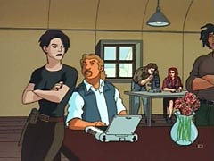
この黒髪ショートカットのねえちゃんがなかなか良いのよ。タフでカッコよくって。VIPでいったらターシャみたいな感じかしらん。（やっぱりキツイ性格なのです）

がおー。って感じに毎回怪獣（というより巨大ミュータントモンスターという感じかな）とゴジラが対決、そのゴジラを助けるべくサポートするっつう、なんかよくわからん設定。多分第1話から見ればわかるんだろうが。でもこいつら、いつも見物するの近すぎ。USゴジラは動きが速いです。
今回見た話は、ゴジラが病原菌をまきちらす植物怪獣と戦っていて、病原菌に感染してしまい、ゴジラピンチ！というお話。ゴジラを助けるために、科学者チームはゴジラの体内に入り、血管を通って脳髄にいるモンスターの病原菌を直接レーザーガンでやっつけようということに。

ゴジラの断面図。おもいのほか脳がでかい。知能はかなり高そうだ。
実際、ゴジラの音声パターンを解析してコミュニケーションをとろうという実験もやっていた。
それにつけてもアメリカ人、体内冒険大好きだなあ。
最後はゴジラの鼻から、鼻水まみれになって脱出と、やっぱりアメリカ人はこきたないネタも大好きなのでした。科学的につっこみどころはかなりあるものの、けっこう良くできている。
こういうSFアドベンチャーって日本ではなかなかお目にかかれないので、いいわあ。 ゴジラ特集が終わっても、レギュラー放送で流しておいてほしい。（でも日本映画じゃないからむりかなあ）
テラの蝶飾りは最初からテラがつけてましたね。何をみたてんだか・・・わし。
スレイドさんならやりかねんと思いこみすぎ。
ティーンタイタンズ人気ですね。まあ、自分のまわりの反応でしか判断材料がないので、本当に大人気かどうかはわからないですが。
ただ、ティーンタイタンズが始まってから、ティーンタイタンズがらみでアクセスが増えているのは事実で、感心もっている人は多いんだなあと思ってます。ていうか、今日のアクセスなんか多すぎ。
どっかからリンクされたとかいうのではなく、純粋に検索エンジンからの増加。 これは、ティーンタイタンズが「ただ面白かった」というだけの作品でなく、「もっと知りたい」と思わせる作品なんだと解釈できる。
すでに「TEEN TITANS FAN!」という同盟サイトも出来てますね。これからもティーンタイタンズファンサイトいっぱい出来てくるのかな？
ただ、最近のwebの傾向としては、純粋なファンサイトを立ち上げるというより、ブログなり個人サイトで「扱う作品を付け足す」という感じが多くなっているように思われます。まあ、それはそれで、世の中の流れということで。
ティーンタイタンズでディレクターやライターをつとめるDavid
Slackさんのインタビュー記事。
特に第一シーズンについてイロイロ詳しく語られていて興味深い。
英語だらけでわけわからん、という人はトゥーン日誌@サンタクルズの記事に日本語による要約があるのでどうぞ。（ていうか、私もそっちを先に読んだのでした）
これを読むと、第一シーズンはやはりスタッフもどう仕上がるかわからない手探り状態だったのがよくわかる。日本では順番どおりだったが、アメリカでは本来第1話であった
「Divide & Conquer（仲間われのピンチ）」のかわりに「Final Exam（危うしタイタンズ）」が初回に放送されたのは、局側の要望だったようだ。やっぱりつかみが肝心ってとこなんだろうね。ジンクスでハートをきゃっち！
そして物語も極力単純にするようつとめていたようだ。作品のテーマもどうも「正義」ではなく「友情」のほうに重きを置いているように思える。あと、ロビンをバットマンの相棒としてではなく、チームのリーダーとして描くよう努力をしているみたい。バットマンが出てきちゃうと、どうしてもロビンの位置が低くなっちゃうので、今後もその存在をにおわすことはあっても、登場することはないんだろうなあ。
ほか気になったとこといえば、「Nevermore（レイブンの謎）」では
Something on the way to Azarath - a Dr. Strange-type world.
と言ってるとこみると、もともとはレイブンが住んでいたというアザラスに行く話だったようで、それはそれで見たかったなあ。
あと、「Switched（入れ替わった2人）」では、それぞれモノマネでやったら区別がつかなくなったのでやめた、というのは凄い。タラさんのスターのモノマネを聞いてみたいものだ。
これを読むと、スレイドはバットマンになりたい男ともとれるな。テラは「バットガール」の代わりなのかもしれない。
◇
来年のアメリカの新エピソードには「Bunny Raven」というタイトルのものがあるようだ。
なんか妄想しまくりなんですが・・・うさ耳レイブン・・・ﾊｱﾊｱ
さすがにテンパリ始めてきました。なんか今年は重なり方がヤバイよ。計算してみたら、なんか税金もヤバイよ。今年はなんの対策もしてなかったので、かなりヤバイよ。ついでに年賀状もヤバイよ。というわけで原稿もヤバイよ。今回はマジごめんなさいになりそう。
TT「犬も歩けば…」
エロ犬。以上。
まあ話はアレなんですが、そのわりに作画は悪くなかったかも。レイブン押し倒されまくりもよかったが、スターの生足も・・・
あれだけやって抜けなかった首輪はいったいどーしたんだ？というつっこみは無しですか、やっぱ。それにしてもサイボーグの時といい、他のメンバーが救出にいく場合って役立たずな場合が多いような。みんな自己解決してるし。
TT「大地の少女テラ」
犬話、昨日感想書いておけばよかった。今日これ見たらすっかり霞んじゃったよ。
テラは静止画で見た時はそんなに思うとこはなかったんだけど、動くのを見るとすごくいいね！けっこう感情移入しそうだ。
テラの訓練シーンやほかでもかかってた曲、あれはテラのテーマなんだろうか。実はかなり気に入ってるのです、この曲。Puffyのアルバムもいいけど、TeenTitansのサントラでないかなあ。マジ欲しい。
「友情は永遠?」にしても、第2シーズンは音楽も全体的にクオリティアップしてる気がする。
スレイド、ロビンに絡んでいる時は笑って見れたけど、テラと絡むと笑えないなあ。なんかすごく悪役っぽい。テラちゃんかわいそうになってくる。これはすでにテラにかなり感情移入しているってことだろうか。
それにしても、蝶の飾り櫛を用意してるなんて、ますますスレイドの趣味がわからなくなってくる。ていうか、やっぱり天然のコスプレ好きさんなのでしょうか。あの櫛もしこしこと手作りしたのかなあ（笑）
テラも良かったけど、今回はスターファイアの動きがまた良いなあ。
いつもスターの動きには目が離せない。ほんと見てて楽しいキャラだ。
すっかりティーンタイタンズ漬けな感じですが、海外ではティーンエイジロボットが再開、クリスマススペシャルが流れたみたいです。ううう、こっちもかなり気になる。
年末のジェニーでがまんがまん。
◇
FREAK★freakさんの日記で女ミュータンツお絵かきがアップされているんですが・・・
なんか妙にエロく見えたのでした。だって、モナリザなんてまるで裸エプロン・・・げふんげふん。
なので、恥ずかしくてとてもレスできなかったので、自分の日記でぼそりとつぶやくのでした。
TT「友情は永遠?」
(´Д⊂ うっ、ジンときちゃった。オレってこういう話に弱かったのかなぁ。
タイタンズシグナルを鳴らすとこでは、BGMもあいまって、かなりグッときちゃいました。目頭に熱い物が・・・こーいうの好きなんだよ。きずなの残りカスみたいなの。スターのリングが輝くときの表情といったら！もう。じいいいいいん。
今回は出番こそ少なかったけどサイボーグがいいねえ。漢だよサイ！
だってあれは絶対バッテリーの残りを全部つぎこんで駆けつけたに違いないですから。
スターが戻ったあと、「へへっ、これでもう思い残すことはねえや」ガクッ
「サイ！」「サイボーグ！」
とか言って真っ白に燃え尽きたんだよ。おおお、熱いぜ。男泣きだぜ。
未来タイタンズはあの後再結成することはないだろうけど、
ビーストボーイ（ビーストガイなのかなぁ？） 「オラっち、もう一回1からやり直してみるよ」と言って旅に出て、レイブンもきっと過去にあったろうトラウマの原因と決着をつけるために魔界かどっかに行き、ロビンもまた動かなくなったサイをおぶって、自分の基地にもどったんだろうね。うん。
これぞ「燃え」ですよ。「燃え」。
男は一人道をゆく～ 男は一人ゆくものさ～
ところでこの話、旧ミュータント・ニンジャ・タートルズの「タイムスリップ・タートルズ」を思い出しちゃった。
とはいっても、海外物ってタイムトラベル話はよくあるというか、定番ネタなんですが。
パワパフやデクスター、キム・ポッシブルにもあるし、「帝王マンディ」も一応それ系かな。きりがないのでやめとくけど。
その分、手慣れた感じで良くできてました。崩れ顔の使いどころもなんか慣れてきた感じだし。
ティーンタイタンズは学校こそいってないけど、学園ものかもしれないと思った。学園というよりは部活ものかな。スターは帰国子女(笑)
ジャスティスリーグはやっぱり大人の世界で、エキスパートが集まったプロフェッショナルチームのドラマ。ウォッチタワーはその統括事務所。
でもタイタンズは部活のメンバーで、タイタンズタワーは部室。いつもは部室で勝手にだべって、事件がおこると「さあ部活開始！」みたいなノリだ。
X-エボは、そのまんま学園が舞台なんだけど、部活的というよりは、学校外のサークル活動みたいな感じがする。（塾仲間みたいな）
これは日本と米国での感覚の違いかもしれないけどね。
＜深読みタイタンズ＞
これはオズの魔法使いだっ！
渦に巻き込まれて異世界に迷い込んじゃったドロシー（スターファイヤー）を、みんなが助けてもとの世界に返すお話。
・勇気のないライオン（ビーストボーイ）：ライオンに変身したのはそのため
・心のないブリキ（サイボーグ）：体はあってもそれを動かせるエネルギーがないってことで。
・脳味噌のないカカシ（レイブン）：カカシは鳥よけだし、精神がアレになってたってことで。
で、ロビンは・・・・・・オズ大王？
すまん、はやくも破綻しましたっ！！
＜深読みタイタンズ２＞
「スレイドの野望」でもそうだったけど、なんか含みをもった演出がやたらと気になる。
未来のレイブンは「白レイブン」だったけど、あれは精神が統合されたってことなんだろうか？それでバランスを崩した？
ロビン（ナイトウィング）の基地のシーンの前に、スレイドのイメージだった「歯車」が挿入される意味は？
ナイトウイングの基地はスレイドの基地を改造したものなんだろうか。
現在ロビンは、ナイトウイングのことを知っていたようなので、すでにナイトウイングは存在しているんだろう。つまり、初代ロビン（ディック）はすでにナイトウイングになっていて、TTのロビンはティムということになる。（コミック版のDCの公式データでも、TTのロビンはティムってことのようだし）
それをうけて、「ふーん、そっちの未来では僕がナイトウイングになるのかぁ」と言う意味にとれる。
てことは、20年後のあっちの未来では初代ナイトウイングは死亡？もしくは引退？
まあこのアニメ版はバットマン世界と地続きではあるものの、別話として描こうとしているようなので、こういった演出はマニア向けのお遊びみたいなものなんだろうね。こっちのロビンは誰でもない「ロビン」。
（と、思うが、アメコミ系の展開は油断ならないからなあ）
こうるさいアメコミマニアにちらほらサービスしながら、そんなことを知らなくても楽しめるように、わかりやすい物語で「お話」よりキャラへの感情移入を重視した構成がティーンタイタンズのコンセプトなのかもしれない。実際海外を見ても、若い子や女性のファンが多いし。
明日も楽しみ。
TT「スレイドの野望（後編）」
スレイドさんのロビン好き好き大爆発の回。
シリアスなお話なのになぜかおかしくてしょうがなかった。あーヒネた見方してるよなあ。
それにしても、ロビンの親発言と同時にコウモリが飛んだり、タイタンズと対決するビルは「ウェイン産業（ウェイン・エンタープライズ）」、うーん、これはファンサービスなのか暗喩なんのか悩むところ。
つーか、タイタンズの他のメンバーはどーやってスレイドに秘密基地がわかったんだろ？しかも、あっさり侵入してるし。
とりあえず、キャラもこなれてきたようだし、明日からの第2シーズンが楽しみ。
明日は一応スターファイアー話になるのかな？
なんとなくタイタンズの身長と体重を比較してみた。データもとはDCの公式から＞■
（※コミック版のデータなのでアニメとは多少違うかもしれませんが）
わかりやすくセンチメートルとキログラムに換算。
| 本名 |
身長
|
体重
|
|
| ロビン | ティモシー・ドレイク |
165.10cm
|
56.7kg
|
| サイボーグ | ヴィクター・ストーン |
203.20cm
|
201.8kg
|
| ビーストボーイ | ガーフィールド・マーク・ローガン |
172.72cm
|
68.0kg
|
| スターファイアー | コリアンダー |
193.04cm
|
68.9kg
|
| レイブン | レイブン |
165.10cm
|
49.9kg
|
ビーストボーイって本名「ガーフィールド」だったんか・・・
猫に変身したら、ぐーたらしてそう。しかも意外に大きい。
サイボーグはともかく・・
スターファイアー、でかっ！！
おまけ：
スレイド：193.04cm , 99.8kg
バットマン：187.96cm , 95.3kg
スレイド（デスストローク）のほうがバットマンパパよりわずかにたくましいですね。
ていうか、スターと同じ身長なんか・・・スレイド。
gorillazが新メンバー募集とのこと。15日からゴリサイトをチェックしてみようかしらん。
わーい、ヌードルかっこええ～。
てことは、結局映画はお流れになって、リニューアルして再出発ってとこでしょうか？
そーいや、ゴリラズキャラでシムピ日記とかやってたサイトもあったなあ。
TT「スレイドの野望（前編）」
いよいよ第一シーズンのクライマックス。流れとしては「レッドエックス」と合わせて3部作って感じですね。
今回はロビンのアクションが炸裂しまくってたなあ。
それでも、スターファイアーのアクションにちょっと目がいってしまう自分。スターだけは他のタイタンズと比べ動きが特殊な感じがする。
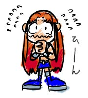タイタンズがチビキャラになることはけっこう多いんだけど、必ずしも同じタイプじゃなくて、いろいろとデフォルメの仕方が違う。今回のチビ化はけっこう好きかも。
こんな感じのスター、ちょっとよかった。
ちゃんとチェックしてないからハッキリとは言えないんだけど、BGMというか、話ごとに毎回曲作ってるのかなあ。
話によってはチグハグな選曲の時もあるけど、同じ音楽だったことはないような気がするのだが。どーなんだろ。
スターファイアーのくしゃみ攻撃も炸裂。一応ヒロインだというのに、見事なまでのくずれっぷり。やっぱカートゥーンだね～。「ごめんあそばせ」にちょっと萌え。
気が付けば、TeenTitansアニメ版のコミックの単行本がようやっとアマゾンでも取扱開始したようです。
vol.1「Teen
Titans Go!: Truth, Justice, Pizza! 」（#1～５）
vol.2「Teen
Titans Go!:Heros on Patrol! 」（#6～10）
収録内容についてはこちらのサイト「５！」を参考にされると良いかも。コミックレビューがあります。
vol.1だとジンクスの話がありますが、#3～5は絵がかなり「アレ」な感じなので覚悟が必要です。特に#4。破壊力絶大。愛でなんとか乗り越えてください。別の意味で笑えます。
vol.2だとブラックファイヤーやら、タイタンズロボが登場します。見応えアリ？
特にタイタンズロボは、ロビンバイクと、T-SUB、T-CAR が合体するという、かなりムチャな展開。アニメでもありえないはっちゃけぶりです。しかもジンクス再登場。うおー。
そういえば、「#10 FINDING NERO」の話に出てくるポスターのキャラたちって、ペンシラーのTodd Nauckさんが描いていた「ヤングジャスティス」に登場していたキャラたちだったんですね。今日、「ヤングジャスティス」のバックナンバー立ち読みしてたら出てた。
名前忘れたけど、ロボの子供版みたいなやつと、「secret」ってやつのような気がするが、どうなんだろ。
ヤングジャスティスはインパルスくんだけが好きで、そればっかり目で追っていたので全然内容はしらないのです。スーパーボーイおっさんくさいし。キッドフラッシュはカッコ悪いし。
でも今読むと楽しめるかも。ヤングジャスティス vs ティーンタイタンズなんてあったような気がするし。
◇
TT「レッド・エックス」
ずばり感想はといえば、「みんな若いなあ」ふふふ。
これがジャスティスリーグで、ロビンがバットマンだったらこうはならないんだろうなあと。
同じ失敗するにしても、バットマンなら最後にみんなを言いくるめてること、間違いなし！
バットマンのマネをするのはロビンにはまだまだ早かったということか。
そもそもバットマンなら、タイタンズのメンバーに盗聴器とか仕掛けてるはず！
それにしてもスレイドってば、ロビンおちょくるの好きだなあ・・・スレイド＝バットマン説が出のもうなずける。
スター「でも、一つだけわかったわ。スレイドがだれだろうと、ロビンに似ているってことがね。
コスプレ好きなとこが」ぎゃふん
TT「Tカーを取り戻せ!」は特集ページに書いたからいいよね。
かわりに、Tカーの話での「その他のキャスト」
乃木 まこと
最上 嗣生
石井 真
桐井 大介
吉野 貴宏
富坂 晶
そして、「危うしタイタンズ（Final Exam）」の回の「その他のキャスト」
乃木 まこと
黒河 奈美
酒井 敬幸
村上 あかね
というわけで、共通する「乃木 まこと」がギズモ確定。
やっぱりジンクスは黒河奈美の線が濃厚ですな。
ようやっとTT今週分全部見れた。その分ダックドジャーズが溜まった。
TT「6人目のヒーロー」
ビーストボーイかわいいなあ。
レイブンまで「目がハート」ってのは意外だが、もともと多感な性格なんだろう。ただそれだと、感情の起伏で魔力が暴走するので、訓練によって今の「クールな性格」とやらにムリヤリ自分を変えたんだろうね。ふふふ、かわいいやつめ。こーいう娘さんて彼氏の前だとあまえんぼうになったりするんだよね。
「目がハート」を見て、「トータリースパイズ」を思い出したが、もともとこの表現ってのはカートゥーンのものなんだよね。ダックドジャーズなんか今でも「目がハート」になってるし。テックス・アベリーとかまでさかのぼれるんじゃないかね。
漫符にしてもそうだ。日本の漫画やアニメの特長のようにされているけど、古い「フィリックス・ザ・キャット」なんかを見ると、けっこうよくでてくる。
やっぱあれかな、本来ドタバタギャグショーといったものはカートゥーンで、物語性の高い冒険活劇なんかはいわゆるアメコミ絵のリアルタッチだったのに、手塚治虫が、カートゥーンなキャラで冒険活劇を始めちゃったのが、日本と米国の漫画のそもそもの違いなのかもしれない。
もし、その当時アメリカ人がリアルタイムで手塚治虫の作品を読んでいたとしたら、今ティーンタイタンズを見ている日本人の我々のような「妙なチグハグさ」を感じていたかもしれない。
日本の漫画のキャラが目がデカイとかよく言われるけど、そもそもカートゥーンのキャラ達の目がでっかいとこから来てる。少女漫画なんかはフランス人形とかの、目がでっかくまつげが多い舶来人形なんかへの憧れから来ているし、ルーツをたどれば、どれも西洋のもの。（それ以前の日本のものは目が小さかった）
それが、日本で、独自の進化とジャンルを超えた応用によって「日本的表現」になったとき、再びアメリカに戻ってゆくというのは、とても面白い現象だ。文化の伝搬ってのはあんがいこういう物なのかもしれない。
なんだか、ずいぶんと脱線してしまったので、他の話の感想はまた今度にしよう。
ただ、「Tカーを取り戻せ!」は全体の出来はいまひとつだったものの、妙につっこみどころが多かったので、こんなページを作ってみた。
本当は日記で書いていたんだけど、妙に量が多くなっちゃったので・・・
タイタンズ今日も見逃した・・・やっぱ毎日放送ってつらいわ。
もういいや、週末にまとめて見よう。
と、昨日と同じコトをぼやいております。
食い物メモ：
ナチョスはワーナーマイカル系のシネコンで食べられる。
チリはウェンディーズで食べられる。
そういえば、ジョイフルは今年もパワパフカレンダーとか作ってるんだろうか？などと思ってジョイフルのサイトを覗いてみると・・・
と、書くとパワパフのあのCMが見れると思うじゃないですか。でも、全然関係ないハンバーグのCMですよ。
もう、ジョイフルはあほですか。あえて言おう「カス」と！
お願いだよー、webでもパワパフのCM配信してよ～～。今冬版のパワパフCMやってるはずでしょー。せめて、そういう意見をくみあげるように連絡先くらい載せておいてほしい。社長のメッセージなんかいらないんだよっ！
さて、今日はこんなものを入手しました。

Space Ghost: Coast To Coastのテーブル付きフィギュア！！どーーん。
箱が無かったので、出所不明。しかもなぜかクリアパーツモデル。レアなのかそーでないのかさっぱりわかりません。よく見てみると「1999ハンナバーベラ」と書かれています。
おもいのほか、まともな作りで、
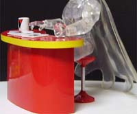
ちゃんと椅子もついてて、座れます。
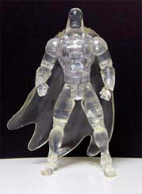
そして、ちゃんと立てます。あの独特なマントも再現されていて、すばらしい。

バットマンに座らせてみました。・・・あまり違和感ないかも(笑)

調子に乗ってバブルスとツーショット。
「いいこ、いいこ」してるつもりだったのに、
「出ていけ、くそがき！」という感じになってしまったのは何故だろうか。
タイタンズ今日も見逃した・・・やっぱ毎日放送ってつらいわ。
もういいや、週末にまとめて見よう。
それにつけてもCNのカレンダー欲しいなあ。
だけど、こっちのハムカンカレンダーと、こっちのメラメラのカレンダー
って別物なんだろうか？ 気になる。
とりあえず通常のハムカンカレンダーの表紙にブルーがいるのがポイントですね。
カートゥーンネットワークのカレンダーって未来日記でもあるわけですから、来年にはイマジナリフレンドも日本上陸ってことになる。楽しみだ。
(カレンダーのリンク先間違ってた・・ていうか同じだった。直したけど）
今日は異形パワパフサイト「千鳥の曲」をやってるオソラさんと会いました。
前にオソラさんが出演している演劇が東京公演した際にも会ったんだけど、さすがにあの時はあまり時間がなかったが、今回はたっぷりとお話しできて楽しかったです。
オソラさんは九州の人なので、たまたま今回東京に来ているような時でもないと会えないので、なんとか時間を作りました。まあ、そのしわよせで、今日のTTは見逃しちゃったけどね・・・ふっ。

普通にファミレスでおしゃべりしただけです・・・（話の内容はまあ、近かったり遠かったり）
ただ、羞恥プレイはさせられました。
「せっかくだからなんか描いてください」ってあんた・・人前で描いてるとこ見れるのって恥ずかしくないですか？ワタスはハズかスかったどす。
そんなわけで、悔しいから私も描いてもらいました。
オソラちゃんに描いてもらったブロッサム・・・・

「どこが？」とか言うな～～！そんなやつはHi Hi Puffyを見る資格などない！ブロッサムと言ったらブロッサムなのっ！
あとジョイフルの最新ドリンクサービス券なんかもいただきました。ありがとう！！
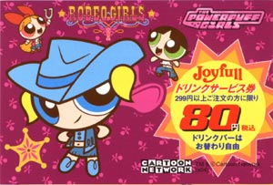
これめっちゃカッコいいよ！！ 去年より今年のカードのほうが全体的にステキだっ！
話しているときに話題にのぼったものの一つに、シムピープルがありました。
オソラちゃん、シムピープルでユートニウム家を作って遊んでいたんだと。ええええー、オレもやりてえ！
なぜかブロッサムとバブルスが仲良くって、いつもバターカップだけひとりぼっちで遊んでたとか、
ベットを3つ買ってムリヤリくっつけてガールズのベットルームを再現したり、
お隣に自分の分身のシムピープルを作って、ムリヤリ近所づきあいさせて仲良くさせたり、
あげくの果てに（分身が）ガールズと一緒にオフロに入ったりしたとか！！ばふーー。
やる！おれシムピープルやるよ！！
まあ、もともといつかはやりたいと思っていたんだよね、シムピープル。
それはずっと前に、こちらのサイトでニンジャタートルズのシムピ日記を見たせいです。今はお絵かき日記になっているけど、ずっと前は忍者カメのシムピープルキャプチャを掲載していてて、それ見てからずーーっと、「ああオレもやりたいなあ・・・もちろんガールズで・・・」とか思っていたんですよ。
って、今日見たらシムピカメ日記が復活してたっ！！なんという偶然。いや神の啓示。やはり運命はオレにシムピやれってことなんですね。
・・・今始めたら地獄を見るのはあきらかなので、来年の目標としますけど。年末進行はよ終わらせたい。